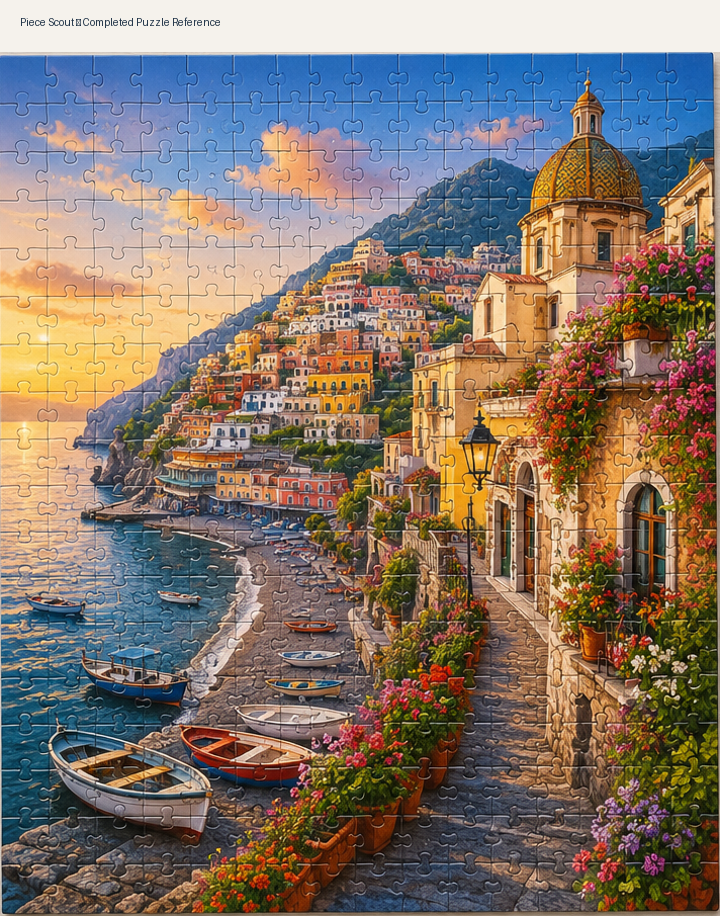
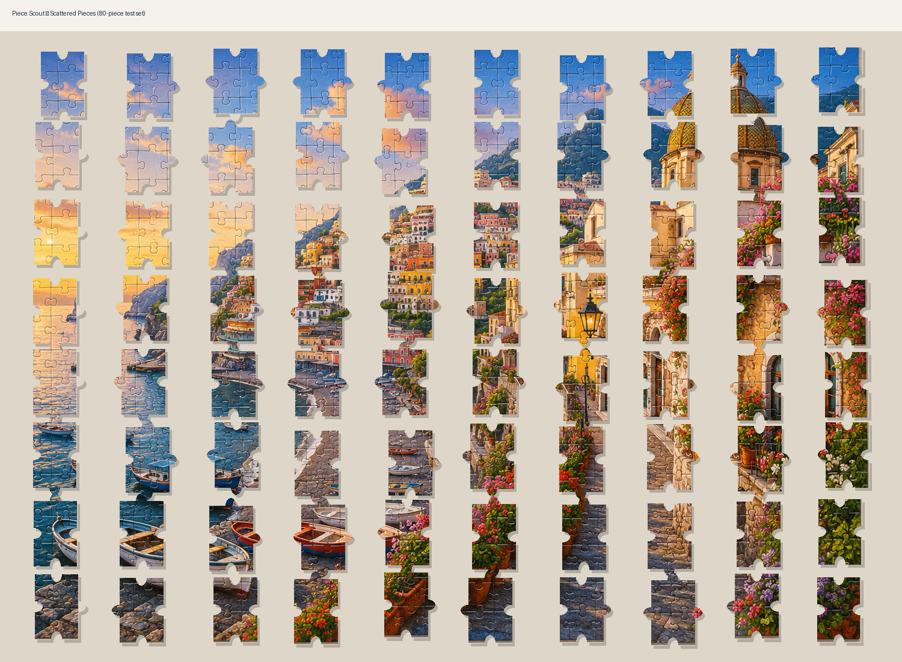

1. Reference
2. Pieces
3. Scout
Load your puzzle
Load two photos, then choose Analyze puzzle. The sample can still be used to verify the interface.
Completed puzzle

Predicted location
For the first real test, use a clear, mostly straight-on photo of the completed puzzle image. A box photo may work if the puzzle artwork is clearly visible.
Loose pieces

Detected piece
The analyzer attempts to separate pieces from the table, then uses image features to estimate each piece's location in the reference.
Ready to scout
Analyze your two photos, then tap a detected piece.
V2.0 real-analysis milestone: this build is no longer limited to the pre-programmed sample. It uses OpenCV in the browser to detect likely loose-piece contours and ORB feature matching to estimate where each detected piece appears in the completed reference. It is an early CV engine, so difficult lighting, patterned tables, overlapping pieces, heavy glare, and box perspective can still cause misses.